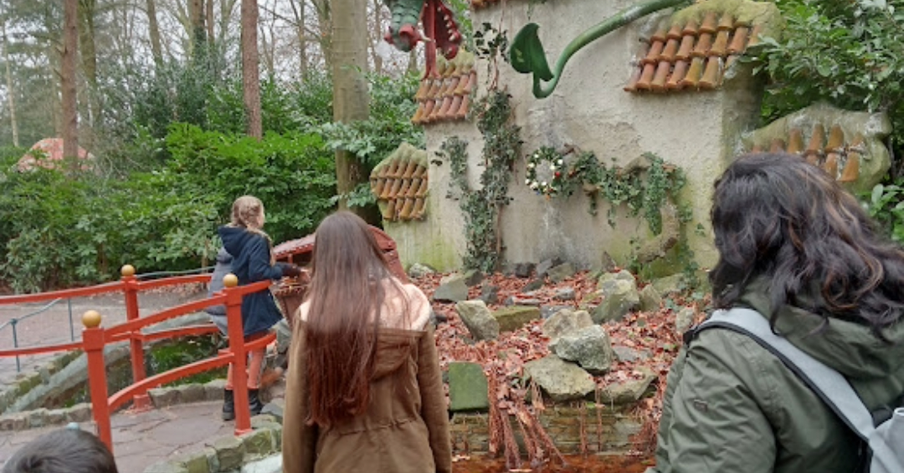
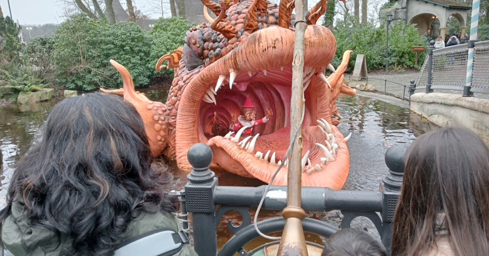
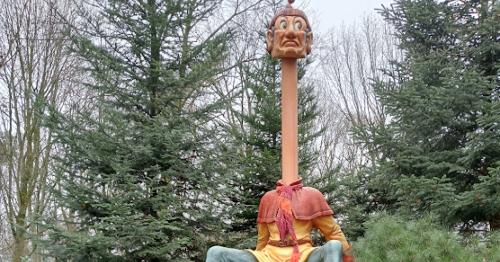
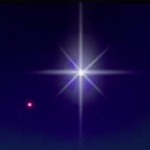

The earth shall be full with knowledge
of the Spirit,like water covering the sea" Isaiah 11:9



Evolution, creating humans
Countless forces in nature have worked together to create a being that can rise above itself.
Once, man’s survival and development, faced with an extremely challenging environment depended on instinct and intuition. Humankind were significantly instinctual group-animals and lived in an animistic psychic state of oneness with nature. They lived to a high degree by knowledge, morality, and behaviour patterns provided by their innate nature.
Complex autonomous thinking, with its ability to problem-solving and planning ahead, was still to come.
That developed when early humans needed broader orientation of their environment and planning strategies and devising tools to defend them against destructive forces of nature and enemies; and solve conflict and problems in their expanding societies.
Under these pressures of increasingly complex and demanding social environments, we modern humans have for good part left behind the instinctual way of navigating life.
We have developed, a degree of consciousness of our actions and a mind and will of our own. We have attained objective, critical thinking and knowledge of reality. A degree of discipline and insight into our selves keeps us most of the time safe from our blind impulses and potential dangers of reality.
Increased free will and mental flexibility enable us to make our own choices and plan our future. Our field of consciousness of reality has expanded and continues to do so. We now can navigate our environment with a fair degree of autonomy. We have impressive associative and logical sequential thinking, as man’s achievements in science and technology shows.
We have developed a sense of morality, a notion of protecting our well-being and not harming each other. This ability translated into a code of conduct, a collection of laws that prevents moral decay and provides us with social justice, to which all group members have to abide.
But the darker aspects of our social life and the damaging effects we have onto others and our natural living environment show, that we certainly are not sufficiently ethically human. We lack more in-depth insight in and are often ignorant of the forces that can negatively impact our lives and others. The collective moral code of conduct is not enough to keep us safe from harming ourselves and others. We have much more development to do in this respect.
We have to add to our capacity for reason, a broader conscious light and attain knowledge of our outer and inner reality. In particular of our psyche’s unconscious part, including the collective Unconscious (or innate spirit of nature) we all partake in.
Insufficient self-knowledge (of the ego-conscious+the unconscious part of the psyche) is the main reason that we still are morally deficient. We need more knowledge of our full nature and become more conscious of the consequences of our actions. Attainment of broader insight in our psychic nature will become personal duty and task for all people in the future .
Observing the plight of our natural environment, general moral decay and inhuman aspects of societies, it is clear that we suffer from this lack of insight into our nature and we can observe that we are still poor in ethical ability.
We need a much more differentiated and mature feeling-relation to others and nature, enabling us to reason and navigate life by feeling-valuation, and priority in feeling-order. And perceive life and broader reality in the correct image and moral order and truly humanise the world.
Biological evolution by the Darwinist process and genetic -‘ chance?’ – mutations have made us physical vessels in which content of spiritual /of unknown origin, can be expressed and come to realization within the human psyche and will determine our further evolution, our ongoing humanization.
How will personal psychological development and general human evolution make mature ethical beings out of us and by that fully human?
[ In development…..
The subjective and objective psyche…
The rise of the ego-complex ; Loss of instinct—guidance by innate nature.
Separated from the instinctual base by an ego—that thinks it’s the only King/Queen in the castle of the Self and rules over nature
Return to the broader Self / the Unconscious or the Spirit of nature within, with a conscious and objective mind.
Uptake of archetypal content for further humanization of man.
The long brutal way of biological evolution made the human organism into a vessel for the uptake of so-called archetypal content, created by innate creative nature/spirit. One can foresee that the existence of archetypes, brought to our rational understanding by C.G.Jung in their aspect of being intrinsic psychic structural elements in the later stages of the evolution of our psyche, will give the materialistic evolutionary psychologists a good headache. Without archetypes, we cannot function as biologically based beings with typical human behaviour and – psychology; and we cannot individuate without taking into account these intra-and endo-psychic factors. Because even the instinct of and process of individuation – becoming a conscious-aware mature human-has an archetypal structure underneath.
We shall have to let go of the idea that only external forces have been involved in the evolution of the human psyche. The same goes for the Freudian notion that the ego-conscious part of the mind has somehow mysteriously created an unconscious with extraordinary abilities that function as a supplement/auxiliary to its functioning. An unconscious that even can produce dreams and intuitions that aid the ego-complex in its development. By which the unconscious part of the human psyche shows that it knows about the state of our ego-conscious reality and its living environment. It can provide the ego with information on how to adapt correctly it’s our outer and inner world, bring the ego in right balance with the broader psyche, and guides us by cultivating the ego to become conscious-aware individuals.
Evolution of the psyche
The increasing complexity of societies and consequent challenges forced group-humans, who had a predominant animistic experience of their environment to expand their mental ability. Initially, they navigated their world by instinct, intuition, and dreams. They needed to develop more and more intelligence of their own, complex thinking, and the ability to plan ahead.
They needed rational, logical intelligence and objective consciousness of reality so that they could know the nature of content stemming from their outer and inner world, content that entered their field of awareness.
Consciousness, makes awareness and its contents appear to us as objects, enables the development of free will, the reasoning of our actions and attain insight into the states of our minds, our inner world, thereby our choice and free will could expand. This development is still ongoing and will forever, as long as we evolve, as long as we can attain more awareness.
Consciousness is not the same as awareness because it has awareness as an object. It makes us know that we are aware. Therefore it must be defined as a knowing condition; it certainly relates to our being’s subjective part—to the observer-the mind’s eye and the broader self.
By continuously making distinctions between our outer and inner world, we attained an objective psyche and a subjective psyche, and the mind became divided into a conscious ad unconscious part.
Both the outer and intrapsychic reality became an object of subjective experience and consciousness within the psyche.
Now modern’s man can turn his mind to his inner world – perceiving it as an object of consciousness and reason. It makes it possible to discover the deeper layers of the psyche and the very mysterious realm of archetypes that underpin our instinctual life and typical human psychic elements and – behaviours that are the origin of so many of our emotions and motivations.
We can recognize that our psyche appears to us pre-dominantly as a dualism – and how the objective and the subjective part of it are intertwined and relate to our ego-complex.
Humans are very mysterious beings–ongoing research will be needed to unlock the growing amount of secrets of our psyche. The unconscious part of the psyche is certainly not a kind of Freudian appendix-and of ego-make. It is the other way around, the ego-complex, having its own personal unconscious is clearly created by the larger part of the psyche, the Unconscious. It has an archetypal form underneath by which it can function relatively autonomous.
Expressions and abilities of the unconscious part of our psyche, experienced and observed by the Ego, point to innate living creative nature, of which we know very little about, which seeks us to become individual conscious beings.
Beings, that are becoming more and more conscious of their outer and inner world, by attainment of ever-widening self-knowledge.
The more conscious we become – – the more we can express – – the more human we become.
[ in development…F.Polak–natures has and is seeking an objective light upon itself along an inherent premonition-The fully mature human proves–that biological evolution was a necessary pre-stage – for us to be come a vessel for objective conscious light…
Nature creates within as without – Creative Spirit within
The psyche of the human being is subject to intra-psychic creative processes and forces of nature that are in themselves (an sich) out of reach of our reason and therefore unknown to us.
We can experience and recognize the existence and activity of these forces indirectly by their effect on and influence in our lives and broader reality. We call them archetypes. They are at the base of instinctual biological life, but in human beings, they are also the structural elements and forms underneath typical human thought and psychic behaviour
We can empirically observe that these unknown (hence spiritual or archetypal) forces are behind the individuation -process.
The origin of these archetypes that are underneath and expressed in our biological instinct and fundamental psychic elements is very mysterious and entirely unknown. Therefore, this instinctual drive towards individuation can be perceived as an inner manifestation of nature’s creative spirit. It may very well be justified to state that the creative Divine is alive and present in the deeper layers of the human psyche. A soft voice in the desert, only heard and allowed to express itself by very few (Isaiah 40:30).
We consider it pure innate, inborn spirit, the spirit of life and its creative tools – are the archetypes / or spiritual elements.
This mysterious innate spirit once sent dreams and visions (day-dreams) to the prophets, so that they could make their people acquainted with the will and presence of spirit and how to live life religiously by taking this spirit into account.
For us, modern more autonomous and individualistic people, this spirit creates the dreams that help us with correct adaptation to our outer or inner living environment, including this innate spirit.
It produces dreams, intuitions, and specific feelings that help us keep a good balance between the ego-conscious centered part of the psyche and the unconscious part of the psyche. And is behind the soft voice -to be developed- of our innate natural conscience, the dormant spirit of righteousness
It creates the content that guides us towards becoming conscious-aware individuals. These are individuals who have sufficient knowledge of their outer and inner world and how they are interconnected, and who in their lives take their intra-psychic activity into account. It would not be wrong, to understand this unknown almighty spirit that works in and through nature, structures and rules biological and human psychic reality, and seeks to make conscious-aware individuals out of us, to be the spirit of the Divinity or God.
Much more —on Spirit and the nature of its archetypes and the universality of archetypes in this project. Innate creative spirit/nature as major factor in our biological evolution. As endo-psychic reality
[ In development…
. Human evolution from now on dependent on the evolution of the human psyche ; this in turn to degree of spiritualization or realization of its archetypal underpinning .

Card title
Venus the evening- and the morning star–the old light-the new light-evening knowledge- morning knowledge. Old Spirit new Spirit-Stella Vesperia -Stella Matutina. David (Christ) the morningstar.
Christ as morningstar– Eros and Logos
Star of David–symbol of union spirit matter–heaven earth– feminine masculine-an ancient symbol.
The Seal of Solomon is attributed to King Solomon in medieval Arabic tradition, from which it developed in Islamic and Jewish mysticism.
It was often depicted in either a pentagram or hexagram shape. It is the predecessor of the Star of David
Venus as Pentagram–symbol for ancient Babylonian Ishtar–the Queen/Goddess
The Morningstar -as the spirit of Christ, embodies sol and luna light- a new conscious light-different in each sex
Father son mother daughter as one within the Holy Spirit
Quincunx–quinta essentia-higher future human in Ezekiel’s vision.
Gilgamesh dream
Loadstar
Daystar of wisdom in Baha’i
.
Morningstar
Individuation
By the term ‘individuation’ we mean, the human effort to make oneself into an integrated unity of ego and the whole personality or the Self; resulting into a whole of conscious and unconscious psychic functioning.
It involves accepting and becoming conscious of the biological and the spiritual aspect of our nature.
Also, recognising the opposite sexual forces and qualities within our psychic nature is required, because these are the main intra-psychic creative elements and factors that make a mature man or woman out of us. By which we mean sexually psycho-spiritual one-sided beings.
Intra-psychic masculine and feminine qualities are at heart complementary. They must be brought in agreement and union under conscious light through the experience of these in life so that they in their action are concerted.
Becoming a mature and conscious human cannot be done without living and experiencing outer and inner life to the full; learning from and engaging wholeheartedly with people of all kind. We cannot achieve a sufficient degree of individuation without meeting and experiencing oneself, through interaction with the Self in others.
Passionate involvement with our fellow man brings the best and the worst out of us.
Others bring negative aspects of us into our field of awareness, where they are presented to our faculties of conscience and reason. And when valued and understood, they are integrated into our conscious personality.
This is self-cultivation with the aid of others. Other people are most important for us to develop new abilities and awake potentials. One should endeavour to meet people of all kind. Even Buddha could only attain conscious light and knowledge of human nature through identification with the tree of life. Live life and reflect on it.
The process of individuation-equals a long full life -experience- which includes a suite of qualities, present or to be developed, among other-a capacity for love, honesty, courage, sacrifice, endurance, effort, discipline, common sense, realism, making good choices in life, reflection on own motivations, on one’s ego-life, on inner events, on expressions of inner Spirit / the collective Unconscious, on the Self in broadest.
By virtue of this attitude to life, one attains a high degree of conscious awareness of the inner and outer reality, Self-knowledge, wisdom, truthfulness to life and soul, and a capacity of love for loves’ sake and most importantly it diminishes one’s own psychic darkness, one’s unconsciousness, which Buddha termed ‘ignorance’ and considered it to be the most significant cause of evil and harm to oneself and others.
True Tikkun Olam – entails bringing the world within in order by attainment of conscious light through self-knowledge. This will translate to order in one’s external world and to the ethical improvement of society.
The Individual
A true individual is an undivided individual, which means a person who is psychically undivided or a psychological duality. And is a person who is and functions psychologically as a whole of conscious and unconscious.
Such individuals have brought the conscious and unconscious part of their psyche to a degree of mutual assimilation and under a new conscious light. They shifted the position of their ego-centred consciousness closer to the threshold of the Unconscious, which is the domain of the Spirit that works in nature.
They have brought the conscious and unconscious part of their psyche under objective conscious light. They shifted the position of their ego-centred consciousness closer to the threshold of the Unconscious (the realm of innate spirit of nature). They did this by allowing the expressions of their broader Self, the Unconscious, to affect and influence their lives.
They followed the expressions and prompts that relate to the inborn or instinctual/spiritual drive that seeks us to become more human by expanding the conscious-awareness of our inner and outer reality. They recognized and took effort to understand these expressions as not made by the ego-complex, but perceived these as coming from the deeper layers of the psyche- such as dreams -certain feelings-intuitions and creative fantasies etc. By this conscious realization of unconscious content, a degree of assimilation occurred and integration by uptake of these contents in the wider economy of the psyche resulted.
[[ In development …
Tomorrow’s Human
Tomorrow’s humans will be more mature conscious-aware individuals. They will have sufficient knowledge of the nature of the psyche and the Spirit that expresses itself within and through them.
They will know that their ego-life is not only subject to external biological and collective social forces, but that the unconscious aspect of their psyche also guides them. In broader terms, they also directed by the ‘Self’ of which their ego is a (much more conscious) serving part.
They know that the creative force of innate nature is behind individuation and that it creates by the masculine and feminine principles or archetype that are present and active in each sex, one more conscious and developed than the other. And that’s is a crucial aspect of individuation to bring these two principles into balance and agreement to work together under conscious light, with aid of the opposite sex. This will be a primary criterion for the sexes to choose an intimate partner.
Through all chaos of life, tomorrow’s humans will be able to see the basics of a universal order within their inner and outer reality. They can recognize the presence and activity of the creative Spirit. They will take their innate natural conscience – their ‘spiritual rector’ into account in their lives.
They will be to good degree spiritualized biologically based beings, vessels in which spirit (the body of archetypes) has come to a realization; has come to consciousness and embodiment in life.
These individuals experience a ‘mine and Thine’ within their psyche. They can differentiate between content that belongs to the ego-conscious (‘mine’) and content belonging to the Unconscious (‘Thine’).
This ability is an essential base for inter-connectivity, the energetic and feeling flow and good communication between the psyche’s conscious and unconscious part.
These people feel strongly responsible for furthering and maintaining this inner psychic situation and are alert regarding psychic hygiene. They will be fierce guardians of the social quality of their society and in protecting our natural environment.
Their profound Self-knowledge makes them ethically advanced–their knowledge of life and human nature make them wise people–They are people who can make choices to best end for their fellow human beings.
For them, ‘normal’ means ‘natural’, namely, thinking and living in line with the way of nature, in agreement with biological and spiritual instinct. And of course, that includes paying attention to the essential drive nature imposes on us–our duty–our natural instinctual or spiritual drive of Individuation–to becoming a conscious-aware individual.
Their nature-typical characteristics-ethical ability-view on life-the meaning of life and their val
Tomorrow’s world
Tomorrows people know that they are subject to nature’s will that seeks them to become conscious-aware mature individuals, and them to respect and realize this will to ability they can. They know it is their duty to Nature or God to obey their inborn natural drive to individuate.
Therefore one can expect that tomorrows societies shall are shaped by people who perceive their duty to individuate as the highest value and the primary meaning of their life. Their society will not consist of ‘individualists’ –meaning each person pursuing their ego-centric driven wants and wishes. They will put first nature’s will to become fully human, the well-being of their fellow beings and their societies’ social quality. And will be good guardians of the natural world.
They will create a – global – society to serve the natural goal of becoming conscious-aware individuals, which will be considered a personal and collective social duty. And, therefore live life and organize their living environment, including their society, according to this goal.
They are people who have a strong love for nature, for life and the good aspects of human nature. And considering themselves not to be perfect humans, they will continuously make an effort to develop themselves to the best of their ability and will try to make individuals out of ‘one piece’ of themselves.
They will see this as their duty to the spirit of nature (or God) and their fellow human beings, including the next generations. Their sense of value and dignity depend on this effort.
Tomorrow’s people will be very aware of the catastrophic consequences that will result from not taking into consideration and paying attention to their inborn natural drive to individuate.
They know they do not stand a chance against nature’s evolutionary power, a power which now demands psychic fitness as well. But it will not only be fear for destruction and moral decay as result of resisting the will of nature (The instinct to individuate) that will motivate these people to strive for change and maintain the world for the better, and keep it that way.
It is mostly their sense for the good -beauty -truth and love for life, others and general humanness that will drive them to bring the best out of themselves, improve their living environment and to be excellent guardians of the world.
Their love for the good aspect of the human being, of human nature, is expressed in worrying about and care for others and in their effort to seek knowledge and develop wisdom to make the best choices in the interest for their society and their fellow man.
They will organize the global society – as an aid serving the individuation of the individual (nature’s will to become fully human), and to develop their full potential and will consider this endeavor a human right and a social duty to others, including the next generations.
They will protect the well-being of humans and their rights and the natural world fiercely. The world of nature shall be considered an essential mean for education and as such will be protected by all means.
Self-development, life-long education and care for the biological world and the maintenance of flora, fauna, and oceans – will become the largest employer. More of this under–image of the future– on the homepage
Destructive people, leaders and human right abusers will have no chance against these fully mature, superior and to higher humanness directed people.
We can look forward to a positive future, but we also have a lot of work ahead. Beginning with each person’s duty of self-development to ability that they can.
Because the evolution of the human being -through an innate psychic creative process- drives us towards becoming more fully and truly human (with our attention and effort) it inevitable will create a better world. Therefore …. we may cautiously optimistically add:
‘All things are new under the sun’ – Fred Polak.
** Fred Polak is the most all-round futurologist to date, his nuclear works are indispensable for realistic future-philosophy, revealing here with these words his positive view on and approach to life.